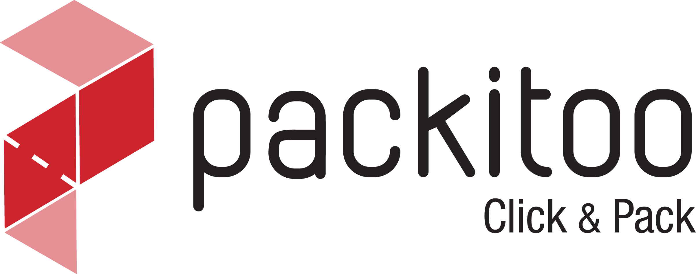

<!DOCTYPE html>
<html>
    <meta charset="utf-8">
    <title> Condition Générale d'utilisation - Packitoo</title>
    <link rel="stylesheet" href="./res/style/index.css">
</html>
<body>
    <div id="wrapper">
        <header id="header">
    <!-- Start of Async Drift Code -->
    <script>
    "use strict";

    !function() {
      var t = window.driftt = window.drift = window.driftt || [];
      if (!t.init) {
        if (t.invoked) return void (window.console && console.error && console.error("Drift snippet included twice."));
        t.invoked = !0, t.methods = [ "identify", "config", "track", "reset", "debug", "show", "ping", "page", "hide", "off", "on" ],
        t.factory = function(e) {
          return function() {
            var n = Array.prototype.slice.call(arguments);
            return n.unshift(e), t.push(n), t;
          };
        }, t.methods.forEach(function(e) {
          t[e] = t.factory(e);
        }), t.load = function(t) {
          var e = 3e5, n = Math.ceil(new Date() / e) * e, o = document.createElement("script");
          o.type = "text/javascript", o.async = !0, o.crossorigin = "anonymous", o.src = "https://js.driftt.com/include/" + n + "/" + t + ".js";
          var i = document.getElementsByTagName("script")[0];
          i.parentNode.insertBefore(o, i);
        };
      }
    }();
    drift.SNIPPET_VERSION = '0.3.1';
    drift.config({
        locale: "fr"
    });
    drift.load('x3xan72tbayc');
    </script>
    <!-- End of Async Drift Code -->
    <div class="header-contact">
        <div class="container">
            <div class="inner-container">
                <span class="copyright copyright-left">
                    <a href="tel:%20+33%205%2033%2009%2013%2094" class="phone">Appelez-nous: +33 5 33 09 13 94</a>
                    <a href="mailto:contact@packitoo.com">Contactez-nous: contact@packitoo.com</a>
                </span>
                <span class="copyright copyright-right">
                    <a href="https://app.packitoo.com/users/sign_up?role=seller&locale=fr " style=" font-weight:400 !important">
                        Fabricants : Rejoignez notre communauté !
                    </a>
                    <a href="./index.html" style=" font-weight:700 !important">FR</a>
                    <a >/</a>
                    <a href="./index-en.html" style=" font-weight:700 !important">ENG</a>
                </span>
            </div>
        </div>
    </div>
    <div class="header-main">
        <div class="container">
            <div class="inner-container">
                <a href="./index.html" class="logo-container">
                    
                </a>
                <nav class="main-nav" role="navigation">
                        <a class="toggle-nav active" href="#">&#9776;</a>
                        
                        <ul class="menu">
                        <li class="menu-item">
                            <a href="./index.html" class="menu-link">
                                Accueil
                            </a>
                        </li>
                        <li class="menu-item">
                            <a href="./a-propos-fr.html" class="menu-link">
                                A Propos
                            </a>
                        </li>
                        <li class="menu-item">
                            <a href="./tarifs-fr.html" class="menu-link">
                                Tarifs
                            </a>
                        </li>
                        <li class="menu-item">
                            <a href="./espace-fabricants-fr.html" class="menu-link">
                                Espace fabricants
                            </a>
                        </li>
                        <li class="menu-item">
                            <a href="https://app.packitoo.com/?locale=fr" class="menu-link">
                                Se connecter
                            </a>
                        </li>
                        <li class="menu-item">
                            <a href="https://app.packitoo.com/users/sign_up?role=brand&locale=fr">
                                <span class="button small-button">Déposer mon brief</span>
                            </a>
                        </li>
                    </ul>
                </nav>
            </div>
        </div>
    </div>
</header>
        <div id="legals" class="main">
            <section id="formulas">
                <div class="container">
                    <div class="inner-container">
                        <div>
                            Condition Générale d'utilisation
                        </div>
                        <div>
                            Article 1 – Objet et Définitions :<br/>
                            <br/>
                                    1.1 La société PACKITOO, société par actions simplifiée, au capital de 33.300 euros et dont le siège social est 1 avenue Mirabelle, 64000 Pau, immatriculée au registre du commerce et des sociétés de Pau sous le numéro 831 200 746, (ci-après « PACKITOO ») édite un site internet à l’adresse www.packitoo.com qui propose un outil de gestion en ligne de projets de développement et sourcing packaging et comprenant une place de marché numérique visant à mettre en relation des professionnels du secteur du packaging avec des clients potentiels (ci-après la « Place de Marché »).
                            <br/>
                                    1.2 Les présentes Conditions Générales d’Utilisation sont applicables à tout Utilisateur du Site. Cependant, l’utilisation de certains services proposés sur le Site sont soumises à l’acceptation préalable de conditions générales de vente.
                            <br/>
                                    1.3 Les termes commençant par une majuscule seront réputés avoir le sens suivant :
                                • Affilié d'une personne donnée désigne toute personne morale ou autre entité (notamment une copropriété de valeurs mobilières) qui, directement ou indirectement par l'intermédiaire d'une ou plusieurs entités, Contrôle ou est Contrôlée par l’Utilisateur Fabricant ou l’Utilisateur Marque, ou est contrôlée, directement ou indirectement, par l'intermédiaire d'une ou plusieurs entités, par une personne qui Contrôle l’Utilisateur Fabricant ou l’Utilisateur Marque, directement ou indirectement par l'intermédiaire d'une ou plusieurs entités.<br/>
                                • Compte Utilisateur Fabricant : désigne l’espace privé sur le Site créé par l'Utilisateur Fabricant en cliquant sur la rubrique prévue à cet effet, accessible par mot de passe et comprenant l’ensemble des données de l’Utilisateur Fabricant communiquées à PACKITOO lors de l’inscription.<br/>
                                • Compte Utilisateur Marque : désigne l’espace privé sur le Site créé par l'Utilisateur Marque en cliquant sur la rubrique prévue à cet effet, accessible par mot de passe et comprenant l’ensemble des données de l’Utilisateur Marque communiquées à PACKITOO lors de l’inscription.
                                • Conditions Générales d’Utilisation ou Contrat : désigne les présentes Conditions Générales d’Utilisation ayant pour objet de définir les conditions contractuelles régissant l’utilisation des services du Site par tout Utilisateur, à l’exception de l’Utilisateur Fabricant qui se verra appliquer les Conditions Générales de Vente Fabricant applicables à la date de sa souscription à une Offre d’Abonnement.<br/>
                                • Contrôle ou Contrôler s’entend (i) au sens de l’article L. 233-3 du Code de commerce ou (ii) du pouvoir de gérer ou d’administrer ou de conseiller à titre permanent et exclusif pour la gestion, une personne ou une copropriété de valeurs mobilières, ou de désigner la majorité des membres des organes de gestion et d’administration, par voie de droits de vote, contractuelle ou autre.<br/>
                                • Demande de Services : désigne la soumission par un Utilisateur Marque, via la Place de Marché, d’une demande de Devis pour l’exécution de services spécifiques dans le secteur du packaging.<br/>
                                • Devis : désigne le devis ou la proposition commerciale soumise par un Utilisateur Fabricant en réponse à une Demande de Services proposée sur la Place de Marché.<br/>
                                • Offres d’Abonnements : désigne les formules d’abonnements proposés aux Utilisateurs Fabricants aux fins d’accéder à la Place de Marché et aux différents services complémentaires proposés par PACKITOO.<br/>
                                • Partie ou Parties : désigne l’une ou l’autre des parties ou les deux parties au présent contrat, à savoir l’Utilisateur et PACKITOO.<br/>
                                • Site : désigne indifféremment les sites www.packitoo.com et www.packitoo.fr.<br/>
                                • Utilisateur Marque : désigne toute société commerciale ayant recours au service de Place de Marché proposée par PACKITOO et ayant mis en ligne sur le Site une Demande de Services.<br/>
                                • Utilisateur Fabricant : désigne tout professionnel du secteur du packaging (fabricants, distributeur, traders, stockistes, agences de communication / marketing), ayant adhéré à l’une des Offres d’Abonnements proposées par PACKITOO, afin de lui permettre d’accéder à la Place de Marché et de répondre aux Demandes de Services.<br/>
                                • Utilisateur : désigne tout Utilisateur du Site.<br/>

                            Article 2 – Opposabilité des Conditions Générales d’Utilisation :<br/><br/>

                            Tout accès et/ou utilisation du Site est subordonné à l’acceptation et au respect de l’ensemble des termes des Conditions Générales d’Utilisation, sans restriction ni réserve.<br/>

                            Tout Utilisateur souhaitant accéder au Site doit donc avoir préalablement consulté ses Conditions Générales d’Utilisation en cliquant sur les liens situés au pied de chacune des pages du Site et s'engage à respecter l’ensemble de leurs dispositions, sans restriction ni réserve.<br/>

                            En conséquence, par sa seule navigation sur le Site, tout Utilisateur est réputé avoir accepté, sans restriction ni réserve, les Conditions Générales d’Utilisation.<br/>

                            Par exception, tout Utilisateur Fabricant se verra exclusivement appliquer les Conditions Générales de Vente Fabricant qu’il aura acceptées lors de sa souscription à une Offre d’Abonnement.<br/>

                            Tout Utilisateur Marque, devra préalablement à la validation de son Compte Marque cocher une case indiquant « En cliquant ici, j’accepte les Conditions Générales d’Utilisation ».<br/>

                            PACKITOO se réserve donc le droit de refuser l'accès ou d’exclure du Site, unilatéralement et sans notification préalable, tout Utilisateur qui ne respecterait pas les Conditions Générales d'Utilisation.<br/>


                            <br/>
                            Article 3 – Accès au Site – Création d’un Compte Marque :<br/>
                            <br/>
                            3.1 Accès au Site<br/>
                            <br/>
                            Le Site est accessible gratuitement à tout personne, entité ou société utilisant le site à des fins strictement professionnelles.<br/>
                            <br/>
                            L’ensemble des coûts liés à l'accès au Site, qu’il s’agisse des frais matériels, logiciels ou d'accès à internet sont à l’unique charge de l'Utilisateur.<br/>
                            <br/>
                            3.2. Création d’un Compte Marque<br/>
                            <br/>
                            La création d’un Compte est exclusivement réservée aux Utilisateurs agissant à titre professionnel.<br/>
                            <br/>
                            Si l’Utilisateur ne remplit pas ces conditions, il ne doit pas utiliser le Site.<br/>
                            <br/>
                            Afin d’accéder à la Place de Marché et bénéficier des services proposés par PACKITOO, l’Utilisateur Marque doit impérativement constituer un Compte Marque.<br/>
                            <br/>
                            L’Utilisateur Marque fournit toutes les informations obligatoires (notamment, Kbis, courriel, identité, coordonnées, informations bancaires, etc.) et s’engage à ce que l’ensemble des informations ainsi fournies soient exactes et mises à jour pendant toute la durée du Contrat.<br/>
                            <br/>
                            Lorsque le Compte Marque est créé et utilisé par une personne agissant au nom et pour le compte de l’Utilisateur Marque, elle déclare et garantit avoir le pouvoir et la capacité nécessaires pour représenter et engager l’Utilisateur Marque dans les conditions prévues au Contrat.<br/>
                            <br/>
                            Avant de procéder à l’activation du Compte Marque, ainsi qu’à tout moment en cours de contrat, PACKITOO se réserve le droit de contrôler l’exactitude des informations communiquées par ou pour le compte de l’Utilisateur Marque, et de demander à l’Utilisateur Marque des documents justificatifs.<br/>
                            <br/>
                            PACKITOO se réserve le droit de ne pas activer ou de désactiver le Compte Marque en cas d’information incomplète, erronée ou frauduleuse.<br/>
                            <br/>
                            L’identifiant et le mot de passe du Compte Marque ont un caractère strictement personnel et confidentiel. L’Utilisateur Marque s'engage donc expressément à conserver leur confidentialité et à supporter toutes les conséquences pouvant résulter de leur divulgation volontaire ou non.<br/>
                            <br/>
                            A ce titre, l’Utilisateur Marque s’engage à ne pas partager son compte et à déclarer à PACKITOO toute utilisation non autorisée dudit compte dès lors qu’il en a connaissance.<br/>
                            <br/>
                            En conséquence, PACKITOO décline toute responsabilité en cas de perte ou d’utilisation non conforme du mot de passe.<br/>
                            <br/>
                            L’Utilisateur conserve la possibilité de résilier à tout moment et sans motif son Compte Marque sur le Site en faisant la demande à l’adresse contact@packitoo.com, accompagné d’un justificatif d’identité. La suppression du compte et des données personnelles sera effective dans les 72 heures suivant la réception de la demande de résiliation.<br/>
                            <br/>
                            <br/>
                            3.3 Notation et dépôt d’avis sur l’Utilisateur Fabricant<br/>
                            <br/>
                            L’Utilisateur Marque peut déposer un avis et une note sur la qualité de la prestation effectuée par l’Utilisateur Fabricant sur la base d’un Devis communiqué.<br/>
                            <br/>
                            PACKITOO collecte, modère et publie les avis et notations depuis son Site. Les avis et notations sont mis en ligne et accessibles à tout Utilisateur.<br/>
                            <br/>
                            Les avis et notations récoltés ne peuvent provenir que d’Utilisateurs Marques identifiées par les Demandes de Services qu’ils ont passées sur le Site.<br/>
                            <br/>
                            Seuls les avis relatifs à un Devis accepté et réalisé sont pris en compte.<br/>
                            <br/>
                            PACKITOO pourra modérer tout avis déposé par un Utilisateur Marque, en particulier si l’avis concerné est considéré comme frauduleux.<br/>
                            <br/>
                            Sont strictement interdits les avis :<br/>
                            <br/>
                                • Non relatifs à un Devis précis et identifiable,<br/>
                            <br/>
                                • Présentant un caractère injurieux, grossier, diffamatoire,<br/>
                            <br/>
                                • Mentionnant PACKITOO et/ou son service (l’avis ne visant à noter que la prestation de l’Utilisateur Fabricant),<br/>
                            <br/>
                                • Comprenant des informations personnelles permettant d’identifier un Utilisateur (numéro de téléphone, adresse, nom, prénom…).<br/>
                            <br/>
                            <br/>
                            Article 4 – Place de Marché :<br/>
                            <br/>
                            4.1 Procédure de communication d’une Demande de Services<br/>
                            <br/>
                            Le Site met à la disposition des Utilisateurs une plateforme d’intermédiation destinée exclusivement à la mise en relation d’Utilisateurs Marques et d’Utilisateurs Fabricants.<br/>
                            <br/>
                            Lorsque l’Utilisateur Marque bénéficiera d’un Compte Marque activé, il pourra accéder à la Place de Marché et déposer une ou plusieurs Demandes de Services.<br/>
                            <br/>
                            Afin de déposer une Demande de Services, l’Utilisateur Marque devra impérativement respecter la procédure suivante :<br/>
                                1. Se connecter sur la Place de Marché et constituer un espace spécifique pour mettre en ligne sa Demande de Services (ci-après « l’Espace Appel d’Offres »),<br/>
                                2. Préciser les prescriptions en matière de confidentialité imposées à l’Utilisateur Fabricant,<br/>
                                3. Détailler sa Demande de Services en précisant les éléments suivants :<br/>
                                    a. Les éléments techniques ( ex : type de produit, contenu, dimensions, matériaux requis, types de finition, etc.),<br/>
                                    b. Les conditions d’achat (budget, quantité, délais, etc) et les conditions logistiques (colisage, conditions de stockage et de livraison, etc.),<br/>
                                    c. Les critères de sélection de l’Utilisateur Fabricant (Tout critère qualitatif et objectif),<br/>
                                    d. Tout élément aidant à la compréhension de la Demande de Services, dont les éléments marketing.<br/>
                                4. Confirmer le dépôt de sa Demande de Services et valider sa mise en ligne.<br/>
                            L’Utilisateur Marque reconnaît être informé que la fourniture de certaines des informations susvisées est obligatoire pour tout dépôt de Demande de Services.<br/>
                            <br/>
                            4.2 Réception des Devis<br/>
                            L’Utilisateur Marque est informé et accepte que seuls cinq Utilisateurs Fabricants, par défaut, puissent rejoindre l’Espace Appel d’Offres et proposer un Devis en réponse à la Demande de Services.<br/>
                            <br/>
                            Au terme du délai qu’il aura fixé dans sa Demande de Services, la Demande de Services sera clôturée et l’Utilisateur Marque aura accès à l’intégralité des Devis déposés par les Utilisateurs Fabricants concernant ladite Demande de Services.<br/>
                            <br/>
                            PACKITOO, agissant uniquement en tant que plateforme d’intermédiation, n’a vocation qu’à mettre en relation les Utilisateurs Fabricants et les Utilisateurs Marques et n’intervient à aucun moment dans le cadre de l’exécution des prestations objet des Demandes de Services des Utilisateurs Marques, sauf souscription d’un service spécifique auprès de PACKITOO objet de conditions contractuelles distinctes.<br/>
                            <br/>
                            En conséquence, le rôle de PACKITOO se limite à mettre en relation des Utilisateurs susceptibles de contracter, à leur fournir les moyens de conclure leur accord sans s'obliger elle-même ni se porter garante des opérations pour lesquelles elle intervient.<br/>
                            <br/>
                            En conséquence, le choix du Devis le plus adapté à la Demande de Services communiquée relève de la seule décision de l’Utilisateur Marque auteur de la Demande de Services.<br/>
                            <br/>
                            Tout Devis remis par un Utilisateur Fabricant est réputé être réalisé par l’Utilisateur Fabricant et n’engage que ce dernier.<br/>
                            <br/>
                            4.3 Sélection d’un Devis et information de PACKITOO<br/>
                            <br/>
                            Si l’Utilisateur Marque accepte en tout ou partie un Devis proposé au moyen de la Place de Marché par un Fabricant ou un de ses Affiliés, il s’engage à en informer PACKITOO dans les trente (30) jours de l’acceptation du Devis.<br/>
                            <br/>
                            En cas de sélection d’un Devis proposé via la Place de Marché, l’Utilisateur Marque s’engage à valider ledit Devis sur le Site de PACKITOO.<br/>
                            <br/>
                            A défaut de respecter cette obligation d’information, l’Utilisateur Marque s’expose à ce que le Contrat soit résilié avec effet immédiat et que le Compte Marque soit immédiatement clôturé.<br/>
                            <br/>
                            <br/>
                            Article 5 – Obligations et responsabilité de l’Utilisateur :<br/>
                            <br/>
                            5.1 Obligations de l’Utilisateur<br/>
                            <br/>
                            D’une manière générale, l’Utilisateur s’interdit de se livrer, dans le cadre de l’utilisation du Site, à des actes, de quelle que nature que ce soit tels que l’émission, l’édition, la mise en ligne ou la diffusion de contenus, informations et/ou données de toute nature qui seraient contraires à la loi ou porteraient atteinte à l’ordre public, aux droits de PACKITOO ou aux droits des tiers.<br/>
                            <br/>
                            En particulier et sans que cette liste soit exhaustive, l’Utilisateur s’engage à respecter les règles suivantes :<br/>
                            <br/>
                                • Communiquer des informations exactes lors de son inscription et lors de l’utilisation du Site ;<br/>
                            <br/>
                                • Ne pas utiliser de fausse identité ;<br/>
                            <br/>
                                • Se conformer aux lois en vigueur, respecter les Conditions Générales d’Utilisation et les droits des tiers ;<br/>
                            <br/>
                                • Ne pas créer, diffuser, transmettre, communiquer ou stocker de quelle que manière que ce soit et quel que soit le destinataire des contenus, informations et/ou données de toute nature à caractère diffamatoire, injurieux, dénigrant, obscène, pornographique, pédopornographique, violent ou incitant à la violence, à caractère politique, raciste, xénophobe, discriminatoire et, plus généralement, tout contenu, information ou données contraires à l’ordre public ou aux bonnes mœurs ;<br/>
                            <br/>
                                • Ne pas détourner ou tenter de détourner une quelconque fonctionnalité du Site de son usage normal ;<br/>
                            <br/>
                                • Ne pas diffuser de contenus, informations ou données de toute nature non conformes à la réalité ;<br/>
                            <br/>
                                • Respecter la vie privée des autres utilisateurs et, plus généralement, ne pas porter atteinte à leurs droits ;<br/>
                            <br/>
                                • Ne pas porter atteinte à la confidentialité et à la sécurité des données personnelles concernant les utilisateurs du Site ;<br/>
                            <br/>
                                • Ne pas communiquer des données personnelles fausses ou mensongères ;<br/>
                            <br/>
                                • Ne pas utiliser abusivement ou frauduleusement les outils de collaboration ;<br/>
                            <br/>
                                • Ne pas collecter des informations sur des tiers, y compris des adresses électroniques, afin de les utiliser pour l’envoi de sollicitations commerciales ou équivalentes, ou de les intégrer au sein d’un service de référencement ou équivalent, gratuit ou payant.<br/>
                            <br/>
                            5.2 Responsabilité de l’Utilisateur<br/>
                            <br/>
                            5.2.1 En cas de manquement par un Utilisateur à l’une ou l’autre des règles précitées, PACKITOO se réserve le droit de lui bloquer l’accès à tout ou partie des services du Site, de façon temporaire ou définitive, sans aucune contrepartie et, si l’Utilisateur dispose d’un Compte, de suspendre et/ou résilier unilatéralement son inscription.<br/>
                            <br/>
                            PACKITOO se réserve également le droit de retirer tout ou partie des contenus, informations et données de toute nature que l’Utilisateur aura mis en ligne.<br/>
                            <br/>
                            Tous matériels et logiciels nécessaires à l’accès et à l’utilisation des services du Site restent exclusivement à la charge de l’Utilisateur qui est donc seul responsable du bon fonctionnement de son équipement informatique ainsi que de son accès à internet.<br/>
                            <br/>
                            Il lui appartient ainsi de prendre toutes mesures appropriées de façon à protéger ses propres données, systèmes informatiques et/ou logiciel de la contamination par d’éventuels virus.<br/>
                            <br/>
                            5.2.2 L’usage des informations, messages ou données de toute nature disponibles par l’intermédiaire du Site relève de la seule responsabilité de l’Utilisateur et les faits ou actes que celui-ci serait amené accomplir en considération de ces informations ne sauraient engager d’autre responsabilité que celle de l’Utilisateur.<br/>
                            <br/>
                            L’Utilisateur est seul responsable de l’utilisation qu’il fait du Site, et, s’il dispose d’un Compte, de toute utilisation ou opération faite à partir de son compte.<br/>
                            <br/>
                            L’Utilisateur est seul responsable, à l’égard de PACKITOO et, le cas échéant, de tout tiers, de tous dommages, directs ou indirects, de quelle que nature que ce soit, causés par tout contenu ou donnée de toute nature communiqué, transmis ou diffusé par l’Utilisateur par l’intermédiaire du Site, ainsi que pour toute violation des Conditions Générales d’Utilisation.<br/>
                            <br/>
                            5.2.3 L’Utilisateur assume l’ensemble des risques et périls liés à ses activités et est notamment seul responsable de l’utilisation des services mis à sa disposition par PACKITOO.<br/>
                            <br/>
                            L’Utilisateur s’engage à n’adopter dans le cadre de son utilisation des Services aucun comportement qui serait susceptible de nuire à la réputation de PACKITOO.<br/>
                            <br/>
                            <br/>
                            Article 6 – Obligations et responsabilité de PACKITOO :<br/>
                            <br/>
                                6.1 Utilisation du Site<br/>
                            <br/>
                            PACKITOO met en œuvre tous les moyens raisonnables à sa disposition pour assurer un accès de qualité au Site, mais n'est tenu à aucune obligation d'y parvenir.<br/>
                            <br/>
                            PACKITOO ne peut, en outre, être tenue responsable de tout dysfonctionnement du réseau ou des serveurs ou de tout autre événement échappant au contrôle raisonnable, qui empêcherait ou dégraderait l'accès au Site.<br/>
                            <br/>
                            PACKITOO se réserve la possibilité d'interrompre, de suspendre momentanément ou de modifier sans préavis l'accès à tout ou partie du Site, afin d'en assurer la maintenance, ou pour toute autre raison, sans que l'interruption n'ouvre droit à aucune obligation ni indemnisation.<br/>
                            <br/>
                            PACKITOO ne garantit pas que les contenus ou services offerts seront exempts d’erreurs ou accessibles en permanence, que les erreurs éventuelles seront corrigées, ni que l’utilisation du Site produira des résultats spécifiques, implicites ou non.<br/>
                            <br/>
                            Les informations contenues dans ce Site peuvent être modifiées sans préavis. PACKITOO ne prend aucune responsabilité quant à l’utilisation que vous faites du Site et des aléas des réseaux Internet.<br/>
                            <br/>
                            EN CONSEQUENCE, L’UTILISATEUR DU SITE ASSUME L'ENTIÈRE RESPONSABILITÉ QUANT À SON UTILISATION DU SITE.<br/>
                            <br/>
                            La responsabilité de PACKITOO ne pourra par ailleurs jamais être recherchée à l’occasion des relations qui pourraient exister entre les Utilisateurs et les annonceurs ou partenaires du Site.<br/>
                            <br/>
                            6.2 Mise en relation de PACKITOO<br/>
                            <br/>
                            Seul l’Utilisateur Marque choisit le professionnel retenu pour la réalisation de la Demande de Services, ce dernier peut être choisi par l’Utilisateur Marque en dehors des Utilisateurs Fabricants ayant remis un Devis.<br/>
                            <br/>
                            Le Site n’a que vocation à mettre en relation les Utilisateurs et n’intervient à aucun moment dans le cadre de l’exécution des prestations objet des Demandes de Services, en conséquence PACKITOO décline toute responsabilité relative à la formation ou l’exécution des relations commerciales ou contractuelles des Utilisateurs.<br/>
                            <br/>
                            Malgré l'ensemble des précautions prises par l'équipe de PACKITOO, PACKITOO ne saurait être tenue pour responsable de toute information fausse, incomplète, frauduleuse figurant dans un Devis communiqué à l’Utilisateur Marque, ni des dommages directs ou indirects pouvant en résulter. PACKITOO ne saurait en aucun cas être responsable des résultats de la Demande de Services et des Devis proposés, notamment s'ils ne satisfont pas l'Utilisateur Marque.<br/>
                            <br/>
                            PACKITOO décline toute responsabilité civile et/ou pénale quant aux conséquences directes et indirectes de sa mise en relation entre Utilisateurs.<br/>
                            <br/>
                            PAR AILLEURS, LA RESPONSABILITE DE PACKITOO NE POURRA EN AUCUN CAS ETRE ENGAGEE SUR LES FONDEMENTS SUIVANTS :<br/>
                            <br/>
                                A. UTILISATION DES SERVICES NON-CONFORME AUX CONDITIONS PREVUES AU CONTRAT ;<br/>
                            <br/>
                                B. INEXECUTION, DEFAILLANCE, DYSFONCTIONNEMENT OU INDISPONIBILITE DES SERVICES RESULTANT D’UN TIERS, D’UN UTILISATEUR, D’UN PRODUIT TIERS, OU D’UN MANQUEMENT D’UN UTILISATEUR A SES OBLIGATIONS ;<br/>
                            <br/>
                                C. DOMMAGES INDIRECTS TELS QUE, NOTAMMENT, PREJUDICE OU TROUBLE COMMERCIAL, PERTE DE COMMANDES, PERTE D’EXPLOITATION, ATTEINTE A L'IMAGE DE MARQUE, PERTE DE BENEFICES OU D’UTILISATEURS ;<br/>
                            <br/>
                                D. PERTE, DIVULGATION OU UTILISATION ILLICITE OU FRAUDULEUSE DE MOYENS D’AUTHENTIFICATION DES UTILISATEURS DU FAIT D’UN UTILISATEUR OU DE TIERS ;<br/>
                            <br/>
                                E. PERTE, ALTERATION OU DESTRUCTION DE TOUT OU PARTIE DES CONTENUS (INFORMATIONS, DONNEES, APPLICATIONS, FICHIERS OU AUTRES ELEMENTS) HEBERGES SUR L’INFRASTRUCTURE.<br/>
                            <br/>
                            <br/>
                            Article 7 – Durée et résiliation :<br/>
                            <br/>
                            7.1. Durée du contrat<br/>
                            <br/>
                            Le présent contrat prend effet à l‘égard de l’Utilisateur par sa seule navigation sur le Site. Le présent contrat est conclu pour une durée indéterminée.<br/>
                            <br/>
                            7.2. Résiliation<br/>
                            <br/>
                            À tout moment, moyennant le respect d’un préavis d’une durée de 30 (trente) jours, chaque Partie pourra résilier le Contrat et ce sans motif.<br/>
                            <br/>
                            7.3. Suspension des services de PACKITOO<br/>
                            <br/>
                            PACKITOO se réserve le droit de suspendre tout ou partie des services qu’il propose, et notamment l’accès de l’Utilisateur à la Place de Marché, dans l’hypothèse :<br/>
                            <br/>
                                • d’un risque avéré pour la stabilité et/ou la sécurité des systèmes et environnements de PACKITOO, des services et/ou  des données, d’une maintenance planifiée, d’une demande émanant d'une autorité administrative ou judiciaire compétente,<br/>
                            <br/>
                                • du non-respect de tout ou partie des présentes Conditions Générales d’Utilisation.<br/>
                            <br/>
                            Une telle suspension peut intervenir immédiatement et sans préavis en cas d’urgence ou de nécessité.<br/>
                            <br/>
                            <br/>
                            Article 8 – Confidentialité et données à caractère personnel :<br/>
                            <br/>
                            8.1 Confidentialité<br/>
                            <br/>
                            Les Parties s’engagent chacune à respecter le caractère strictement confidentiel du Contrat et des informations auxquelles ils auraient accès ou qu’ils seraient amenés à connaître dans le cadre de celui-ci.<br/>
                            <br/>
                            En particulier, l’Utilisateur s’engage à ne communiquer à un tiers aucune information dont il aura eu connaissance au moyen de son utilisation de la Place de Marché.<br/>
                            <br/>
                            Chacune des Parties est toutefois informée que l’autre Partie peut être amenée à communiquer certaines informations qui peuvent lui être demandées conformément à la loi, par l’administration fiscale ou douanière, ou l’autorité judiciaire.<br/>
                            <br/>
                            8.2 Données personnelles<br/>
                            <br/>
                            Lors de l’utilisation du Site, PACKITOO, via ses Sites, recueille les informations suivantes :<br/>
                            <br/>
                                • Les informations communiquées lors de la création du compte,<br/>
                            <br/>
                                • Les données recueillies automatiquement, au moyen de cookies, qui sont nécessaires à la communication par voie électronique et au fonctionnement du Site. En dehors de ces finalités, PACKITOO s’engage à recueillir le consentement de l’Utilisateur pour déposer un cookie après l’avoir informé de sa finalité. L’Utilisateur peut s’opposer à l’enregistrement de cookies à partir de son navigateur, toutefois ce refus est susceptible d’empêcher l’accès aux services du Site.<br/>
                            <br/>
                            Les données concernant l’Utilisateur du Site peuvent être également utilisées afin d’adresser aux Utilisateurs les newsletters du Site, à des fins statistiques destinées à mesurer la fréquentation du Site ou encore pour cibler la publicité diffusée sur le Site.<br/>
                            <br/>
                            Conformément à la Loi n°78-17 du 6 janvier 1978 relative à l’informatique, aux fichiers et aux libertés, le traitement des données nominatives réalisées à partir du Site a fait l’objet d’une déclaration auprès de la CNIL.<br/>
                            <br/>
                            L’Utilisateur dispose à tout moment d’un droit d’accès, de modification, de rectification et de suppression des données personnelles qui le concernent. L’Utilisateur peut exercer ce droit en envoyant un courrier postal à PACKITOO, 1 avenue Mirabelle, 64000 Pau, France ou par mail à l’adresse contact@packitoo.com, accompagné d’un justificatif d’identité.<br/>
                            <br/>
                            L’Utilisateur peut également s’opposer, pour des motifs légitimes, à ce que des données à caractère personnel fassent l’objet d’un traitement. Une telle opposition rendra toutefois impossible l’utilisation des services du Site.<br/>
                            <br/>
                            Les informations saisies par l’Utilisateur sont utilisées pour permettre de bénéficier de toutes les fonctionnalités du Site ou pour permettre de personnaliser son contenu, ou encore pour permettre à PACKITOO d’améliorer le fonctionnement de son Site. Les destinataires des données sont le service technique chargé de l’exploitation et la maintenance du site, ainsi que le service administration des utilisateurs. Les informations saisies par l’Utilisateur ne seront pas transmises à un tiers, ni vendues ou échangées, sauf autorisation préalable de sa part.<br/>
                            <br/>
                            <br/>
                            Article 9 – Propriété intellectuelle :<br/>
                            <br/>
                            9.1 Les contenus susceptibles de faire l’objet d’une protection au titre du droit d’auteur mis en ligne sur le Site sont la propriété de la société PACKITOO.<br/>
                            <br/>
                            L’Utilisateur reconnaît et accepte que PACKITOO détienne l’intégralité des droits de propriété intellectuelle afférents au service.<br/>
                            <br/>
                            Les marques, les noms de domaine, les noms commerciaux, les logos et tout autre signe distinctif de PACKITOO, les graphismes, les photographies, les animations, les vidéos et les textes contenus sur le Site sont la propriété intellectuelle de PACKITOO et ne peuvent être reproduits, utilisés ou représentés sans l'autorisation expresse de PACKITOO sous peine de poursuites judiciaires.<br/>
                            <br/>
                            9.2 « PACKITOO » est une marque déposée. En conséquence, toute reproduction ou imitation non autorisée de ces marques, logos et signes distinctifs constitue une contrefaçon passible de poursuites civiles et pénales.<br/>
                            <br/>
                            <br/>
                            Article 10 – Nullité partielle :<br/>
                            <br/>
                            L’annulation de l’une ou l’autre des clauses des présentes ne pourra entraîner l’annulation de celles-ci dans leur ensemble, à condition toutefois que l’équilibre et l’économie générale de la convention puissent être sauvegardés.<br/>
                            <br/>
                            <br/>
                            Article 11 – Cession de Contrat :<br/>
                            <br/>
                            Aucune des Parties n’est autorisée à céder le présent Contrat, même partiellement, sauf accord préalable et écrit de l’autre Partie.<br/>
                            <br/>
                            <br/>
                            Article 12 – Droit applicable - litiges :<br/>
                            <br/>
                            Les présentes Conditions Générales d’Utilisation sont régies, interprétées et appliquées par le droit français. Elles sont rédigées en langue française. Dans le cas où elles seraient traduites en une ou plusieurs langues, seul le texte français ferait foi en cas de litige.<br/>
                            <br/>
                            En cas de litige avec un commerçant relatif à l'interprétation, l'exécution ou la validité des Conditions Générales d’Utilisation, le Tribunal compétent sera le Tribunal de Commerce de Pau.<br/>


                        </div>

                    </div>
                </div>
            </section>
            <section id="contact">
    <div class="container">
        <div class="inner-section">
            <div class="flex-items-container flex-stretch">
                <div class="flex-item col-3 col-md-6 col-sm-12">
                    <h3>PACKITOO</h3>
                    <ul>
                        <li class="menu-item">
                            <a href="./index.html" class="menu-link">Accueil</a>
                        </li>
                        <li class="menu-item">
                            <a href="./a-propos.html" class="menu-link">A Propos</a>
                        </li>
                        <li class="menu-item">
                            <a href="./tarifs.html" class="menu-link">Tarifs</a>
                        </li>
                    </ul>
                </div>
                <div class="flex-item col-3 col-md-6 col-sm-12">
                    <h3>CONTACT</h3>
                    <p>
                        +33 5 33 09 13 94
                        contact@packitoo.com
                    </p>
                </div>
                <div class="flex-item col-3 col-md-6 col-sm-12">
                    <h3>ESPACE FABRICANTS</h3>
                    <div>
                        <p>Rejoignez maintenant la communauté Packitoo !</p>
                    </div>
                    <div class="button-container">
                        <a href="./espace-fabricants.html" class="button small-button">
                            Comment ça marche ?
                        </a>
                    </div>
                </div>
                <!-- <div class="flex-item col-3 col-md-6 col-sm-12">
                    <h3>NEWSLETTER</h3>
                    Inscrivez-vous et recevez nos prochaines news!
                    <div>
                        <p class="input-container">
                            <input type="text" placeholder="Adresse email*">
                        </p>
                    </div>
                    <div class="button-container">
                        <input type="submit" value="Je m'inscris" class="button small-button" data-sending-label="Envoi">
                    </div>
                </div> -->
            </div>
        </div>
    </div>
</section>
<footer>
    <div class="container">
        <span class="copyright">
            © Copyright 2018 - Packitoo - |
            <a href="/terms-fr.html">Conditions générales</a> |
            <!-- <a href="/privacy-fr.html">Données personnelles</a> | -->
            <a href="/mentions-legales-fr.html">Mentions légales</a>
        </span>
    </div>
</footer>
    </div>
    <div class="cookie-message">
    Nous utilisons des cookies pour vous garantir la meilleure expérience sur notre site. Si vous continuez à utiliser ce dernier, nous considérerons que vous acceptez l'utilisation des cookies.
    <a class="cookie-button" href>Ok</a>
</div>

</div>
<script type="text/javascript" src="./res/js/menu.js"></script>
<script type="text/javascript" src="./res/js/jquery.cookieBar.js"></script>
<script type="text/javascript" src="./res/js/scroll-effect.js"></script>
<script type="text/javascript">
    $(document).ready(function() {
        $('.cookie-message').cookieBar({ closeButton : '.cookie-button' });
    });
</script>
</body>